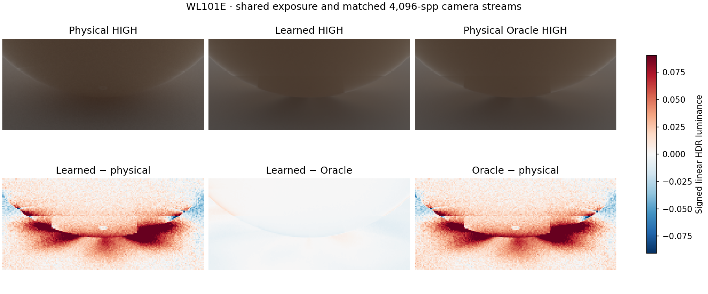
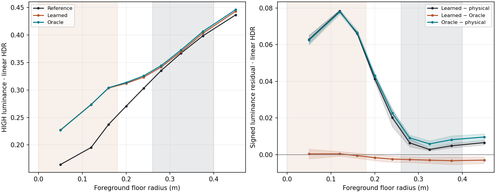
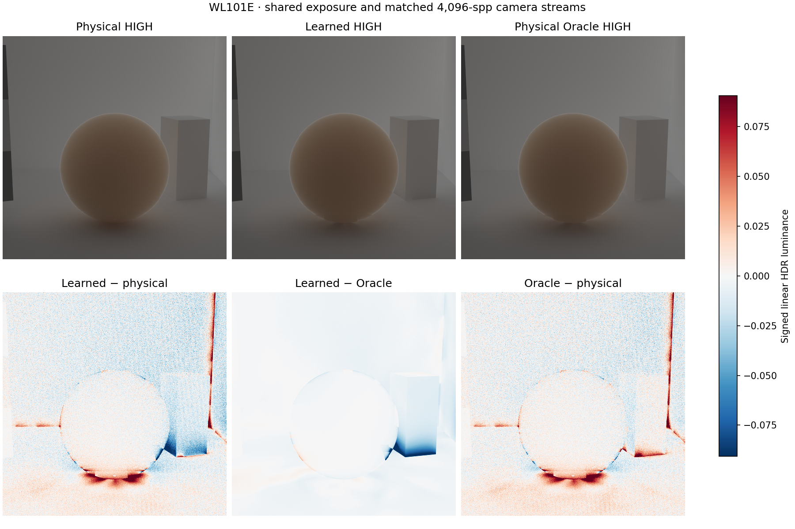

The sphere–floor hotspot persists. The physical table leaves essentially all of the near-floor excess and 95.5% of the near-minus-flank excess. Under the frozen rule the verdict is mixed across the two endpoints, dominated by representation/readout.
Regional metrics · Run configuration and hashes · Evidence index · Worklog
| Endpoint | Learned − physical | Learned − Oracle | Oracle − physical |
|---|---|---|---|
| Near floor | +0.07000 [0.06932, 0.07067] | −0.00016 [−0.00160, +0.00129] | +0.07015 [0.06871, 0.07159] |
| Near minus flank | +0.06554 [0.06466, 0.06641] | +0.00294 [0.00200, 0.00387] | +0.06260 [0.06169, 0.06351] |
Signed linear HDR luminance with approximate 95% intervals. Four independent physical tables were evaluated on two matched 4,096-spp streams. The same 576 physically empty slots had zero readout weight on both streams.


